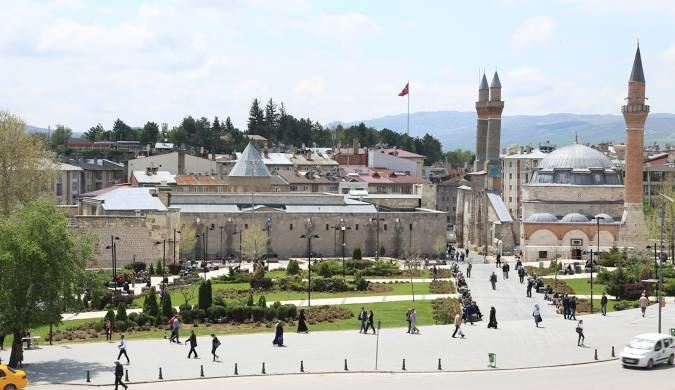
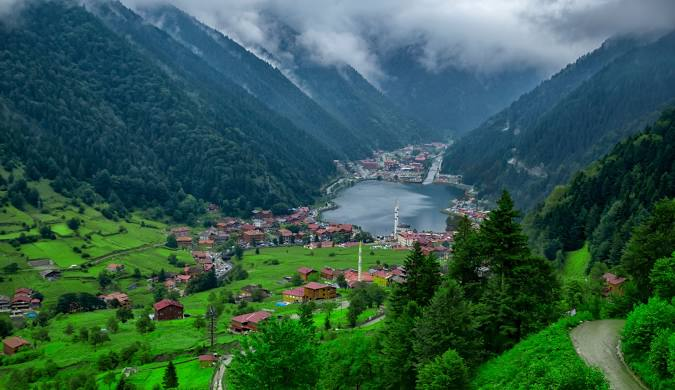
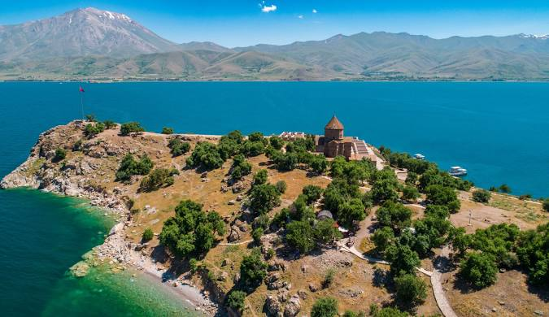

Karadeniz’in yeşil cenneti, doğal bal ve yöresel ürünleriyle ünlü.
Türkiye’nin gastronomi başkenti, eşsiz lezzetler.
Kaşar peyniri ve yayla kültürü ile ünlü doğu şehri.

Tarihi ve doğal ürün çeşitliliğiyle bilinir.

Fındık ve Karadeniz kültürüyle öne çıkar.

Otlu peynir ve kahvaltı kültürüyle ünlü.